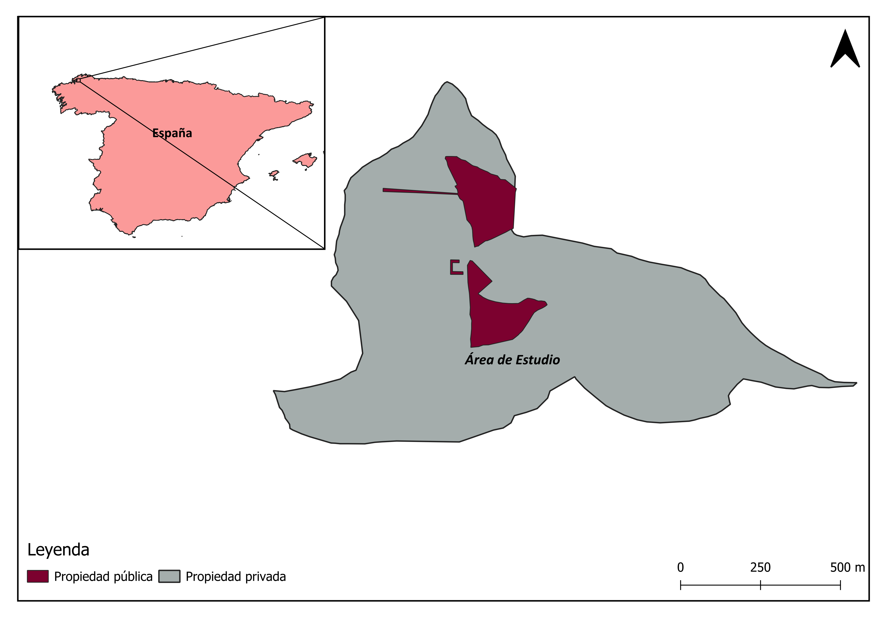

Defensible Cartographic Design Built to International Geospatial Standards
Effective spatial decision-making depends on clear, mathematically accurate cartography. At GeoPhoenix, we combine rigorous geodetic principles with high-aesthetic cartographic layout standards. Every map is constructed within precise projected coordinate systems (UTM, State Plane, or national coordinate grids), ensuring metric preservation, accurate scale bars, and zero distortion across study regions.
Whether you require cadastral parcel delineations for municipal asset records, infrastructure distribution layouts, or high-resolution figures for peer-reviewed journal submission (Nature, Elsevier, Springer standards), we deliver complete digital packages accompanied by organized GIS layer structures.
Engineering & Research Standards
- Compliant with ISO 19115 and OGC geospatial metadata guidelines
- Full projection datum transformations (WGS84, ETRS89, GDA2020)
- High-resolution exports (300 to 600 DPI PDF, TIFF, SVG, AI)
- Deliverable formats: GeoPackage, ESRI File Geodatabase, GeoJSON
- Fully structured QGIS (.qgs/.qgz) and ArcGIS Pro (.aprx) map packages
Specialized GIS Mapping Offerings
Tailored cartographic and spatial database configurations designed for specific project requirements.
Thematic Cartography
Choropleth, proportional symbol, isarithmic, and bivariate maps illustrating complex demographic, economic, and physical phenomena with optimized color ramps.
Academic Publication Maps
Clean, vector-crisp map figures tailored to editorial styling guidelines of international scientific journals, including detailed insets, scale indicators, and coordinate tick marks.
Cadastral & Land-Use Mapping
Precise property boundary digitization, zoning layout configuration, parcel topology verification, and multi-temporal land allocation tracking.
Infrastructure & Utility Mapping
Transportation corridors, water distribution networks, electrical transmission rights-of-way, and municipal asset inventories mapped with clean geometric topology.
Spatial Database Preparation
Creation and normalization of OGC-standard GeoPackage (.gpkg), PostGIS schemas, and ESRI Geodatabases with domain validation and indexed spatial fields.
QGIS & ArcGIS Pro Consulting
Custom styling templates, layer definitions, map book (atlas) automation, and project workflow migration between open-source and proprietary platforms.
Our 4-Stage Mapping Workflow
A structured engineering process guaranteeing geometric precision and aesthetic excellence on every delivery.
Data Ingestion & CRS Standardization
Client vector coordinates, CSV records, CAD files, or field GPS points are ingested and unified under the project's optimal projected coordinate reference system (CRS).
Topology Cleaning & Attribute Structuring
Overlapping polygons, slivers, undershoots, and attribute nulls are cleaned. Spatial databases are indexed and normalized for efficient spatial queries.
Cartographic Design & Symbology
Color theory, typographic hierarchy, visual weight, label placement algorithms, and marginalia elements (north arrows, scale bars, locator insets) are applied.
Quality Assurance & Package Delivery
Rigorous pre-flight checks verify scale accuracy, text readability, legend completeness, and color-blind safety before delivering print-ready and raw GIS files.
Featured GIS Mapping Deliverables
Inspect verified cartographic outputs generated for municipal analysis and regional planning.

Municipal Cadastral & Zoning Delineation
Comprehensive municipal planning overview for the City of Hamilton, delineating parcel boundaries, historical conservation zones, and urban arterial corridors with clean layout hierarchy and locator map insets.

Cadastral Boundary & Land-Use Setup
Detailed property boundary digitization and classification of agricultural, residential, and reserve zoning plots with automated label placement and boundary survey verification.
Standard GIS Deliverable Packages
Every GIS mapping contract provides full ownership of both final media assets and editable project structures:
Frequently Asked Questions
Technical answers to frequent client questions regarding our GIS mapping contracts.
We work with virtually all industry formats: ESRI Shapefiles, GeoJSON, KML/KMZ, AutoCAD DWG/DXF, GPS coordinates (GPX), tabular data with coordinates (CSV, Excel), raster GeoTIFFs, and LiDAR LAS/LAZ files. We can also georeference non-spatial historical paper scans and aerial photographs.
We perform rigorous datum transformations to ensure your layers align seamlessly. All analysis and cartographic representations are reprojected into appropriate equal-area, conformal, or local transverse Mercator projections depending on whether the project emphasizes area calculation, distance measurement, or navigation.
Yes. We routinely format publication figures according to specific publisher constraints (e.g., single-column 85mm, 1.5-column 120mm, or double-column 175mm widths) with vector typography and 300–600 DPI resolution, meeting the stringent criteria of journals published by Elsevier, Springer, Wiley, and IEEE.
Standard thematic maps and parcel layouts are typically delivered within 24 to 72 hours depending on dataset completeness and required attribute classification. Complex multi-sheet atlas productions or enterprise spatial databases are scheduled with clear milestone deliveries.